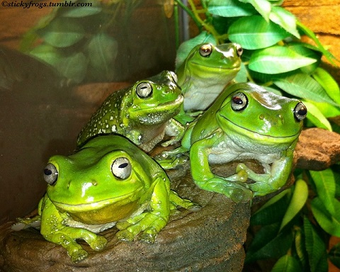

I wanted to go beyond the basic image and webcam recording demonstrated in this week's workshop, and found the p5.Riso library online. This library converts images into files suitable for risograph printing, which has long been an interest of mine. I wanted to experiment with this library's different functions, as there are multiple ways of generating risograph-friendly images.
I started off with an image, taken from stickyfrogs.tumblr.com:
 BACK